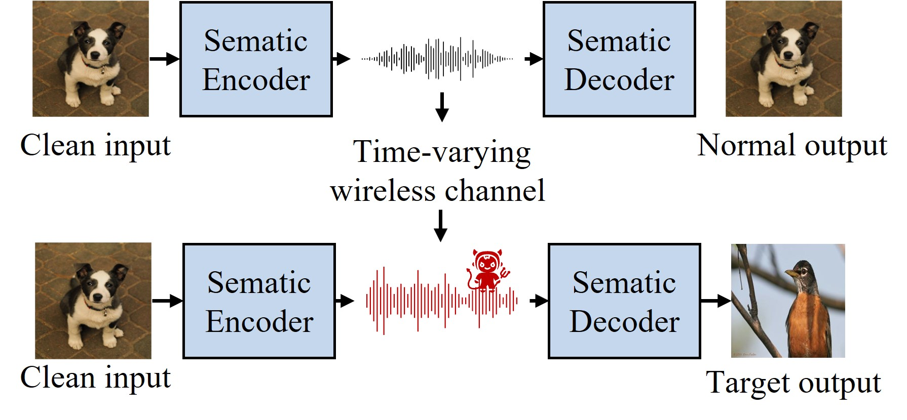

研究经历
学术论文与探索性项目

CCF-A
IEEE TMC
Channel-Triggered Backdoor Attack on Semantic Communication Systems
后门攻击
语义通信
AI 安全
无线信道
本文提出了一种新的用于语义通信系统的信道触发后门攻击（CT-BA）框架，使用固有的无线信道特性（例如，衰落，噪声）作为隐形触发器，而不是输入修改。
- •利用无线信道固有特性作为后门触发器，增强隐身性，绕过常规防御机制
- •通过通道增益和噪声功率谱密度的解耦设计，实现多维触发器可配置
- •无线信道的开放性和时变特性为对手提供巨大操作灵活性，即使无主动参与也能触发

3D-RAG
探索性项目
AgentRay — 3D 电磁场可视化与 AI 语义分析
Vue 3
Three.js
FastAPI
Qwen-VL
ChromaDB
Vue 3 + Three.js/TresJS + FastAPI + ChromaDB + Qwen-VL 空间 AI 可视化系统。将 RAG 范式扩展至三维空间数据，通过 CV 特征提取和多模态 LLM 实现空间语义理解。
- •"3D-RAG"：基于 CV 特征提取（建筑覆盖率、熵、角点密度、天际线粗糙度）扩展传统 RAG
- •多模态 LLM（Qwen-VL + Qwen-Max）实现语义空间理解与自然语言交互
- •asyncio.gather() 并发优化 + InstancedMesh + LOD 策略高效渲染 10k+ 点云